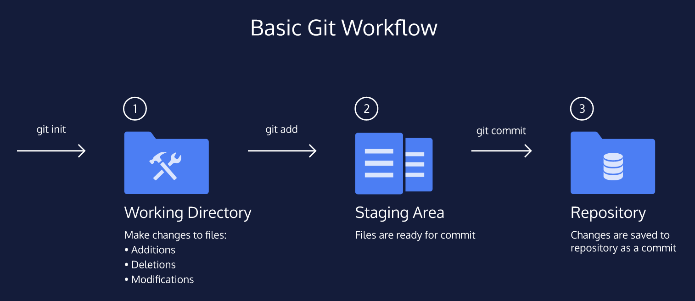

Web-development languages
Each language forms a separate layer with a different purpose. Each layer, from top to bottom, builds on the
previous one.
- HTML — content layer - structures website content
- CSS — presentation layer - applies styling to websites
- JavaScript — behavior layer - adds interactivity to websites
- SQL — data layer - allows your web application to store and retrieve data
HTML — structures website content
Programmers can write code to say: "When this event occurs, run that code."
- html tags
- create hyperlink to picture
- create hyperlink to video
- open hyperlink in new tab
- add a table
Developer resources
Git

- A Working Directory: where you’ll be doing all the work: creating, editing, deleting and organizing files
- A Staging Area: where you’ll list changes you make to the working directory
- A Repository: where Git permanently stores those changes as different versions of the project
Commands to store files in Git
- $ git init
- $ git status
- $ git add filename
- $ git status
- $ git diff filename
- $ git add filename
- $ git commit -m message
Command to restore and earlier version of a file
- $ git init
- $ git status
- $ git add filename
- $ git status
- $ git log
git-cheat-sheet